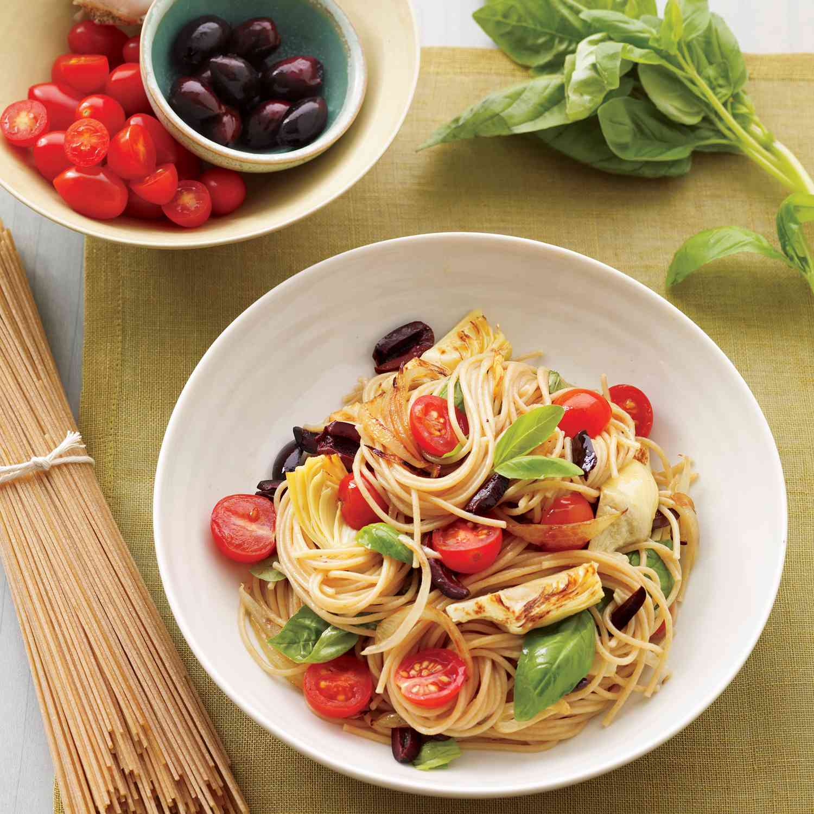
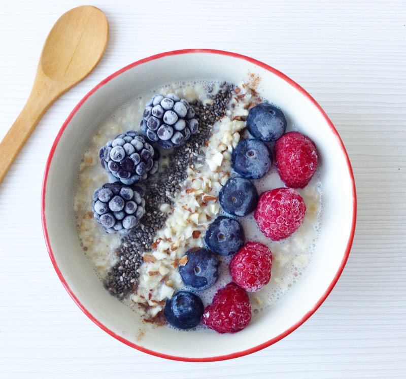

Resultados

Pasta Mediterránea
Una combinación fresca de tomate, albahaca y aceite de oliva, lista en menos de 20 minutos.
Ver receta
Ensalada de Quinoa
Ideal para un almuerzo liviano: quinoa, vegetales frescos y un toque de limón.
Ver receta
